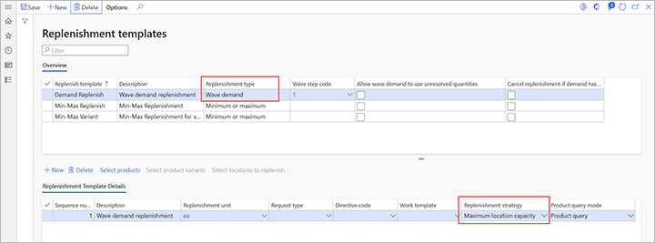

Strategien für die Wiederbeschaffung
Important
Dynamics 365 for Finance and Operations hat sich zu speziell entwickelten Anwendungen entwickelt, mit denen Sie bestimmte Geschäftsfunktionen verwalten können. Weitere Informationen zu diesen Änderungen finden Sie im Dynamics 365-Lizenzierungshandbuch.
Die Vorlagen, die auf der Seite Wiederbeschaffungsvorlagen definiert sind, enthalten Vorlagenzeilen für die Wiederbeschaffung von Wellenbedarf, mit denen Sie auswählen können, wie die Wiederbeschaffung durchgeführt wird. Jede Zeile enthält jetzt ein Feld Nachschubstrategie.
Die Wellenbedarfsmenge Strategie ist die Standardstrategie. Es ist die Wiederbeschaffungsstrategie, die vor der Einführung des Feldes Wiederbeschaffungsstrategie verwendet wurde. Sie verwendet die Richtlinien für die Wiederbeschaffung von Lagerplätzen, um Lagerplätze zu finden, die wiederbeschafft werden können. Dann werden diese Lagerplätze wiederbeschafft, bis der Bedarf gedeckt ist.
Die Strategie Maximale Kapazität der Lagerplätze führt einige neue Funktionen ein. Wie die Strategie Bedarfsmenge verwendet diese Strategie die Richtlinien für die Wiederbeschaffung von Lagerplätzen, um Lagerplätze zu finden, die wiederbeschafft werden können, und füllt diese Lagerplätze dann wieder auf, bis der Bedarf gedeckt ist. Sie unterscheidet sich von der Strategie Bedarfsmenge dadurch, dass alle wiederbeschafften Lagerplätze bis zu ihrer maximalen Kapazität aufgefüllt werden, wie sie durch die Lagerplatz-Bestandsgrenzen definiert ist. Die Strategie Maximale Lagerplatz-Kapazität versucht, Arbeit zu erstellen, um die angeforderte Menge plus eine zusätzliche Menge einzubringen, um die Lagerplätze, die wiederbeschafft werden, zu füllen. In einigen Fällen kann dieser Versuch jedoch fehlschlagen. Zum Beispiel könnten die Lagerplätze nicht genug Bestand haben, um die zusätzliche Menge abzudecken. In diesen Fällen erkennt das System den Fehler und versucht, den Bestand wiederherzustellen.
Die Hochsaison ist ein Beispiel für eine Situation, in der die Strategie Maximale Lagerplatz-Kapazität der Strategie Wellenbedarfsmenge vorzuziehen ist. Während der Hochsaison werden einige Elemente möglicherweise in großen Mengen verkauft. Daher möchten Sie vielleicht die entsprechenden Lagerplätze so oft wie möglich proaktiv auffüllen, um die Anzahl der Arbeits-IDs, die für die Wiederbeschaffung erstellt werden, zu reduzieren.
Important
Um die Strategie Maximale Lagerplatzkapazität voll auszunutzen, müssen Sie die Lagerplatzgrenzen für die relevanten Lagerplätze neu definieren. Ansonsten funktioniert diese Strategie genauso wie die Strategie Bedarfsmenge.
Aktivieren Sie die Funktion Wiederbeschaffung auf Basis von Lagerbestandsgrenzen
Bevor Sie diese Funktion nutzen können, muss sie auf Ihrem System aktiviert werden. Administratoren können den Arbeitsbereich Feature-Verwaltung verwenden, um den Status dieser Funktion zu prüfen und sie bei Bedarf einzuschalten. Dort wird die Funktion folgendermaßen aufgelistet:
- Module: Lagerortverwaltung
- Name der Funktion: Wiederbeschaffung bis zum Maximum auf Basis von Lagerbestandsgrenzen
Strategien für die Wiederbeschaffung festlegen
Um auf die Vorlagen zuzugreifen, gehen Sie zu Lagerortverwaltung > Einrichten > Wiederbeschaffung > Wiederbeschaffungsvorlagen. Wählen oder erstellen Sie im Abschnitt Übersicht eine Wiederbeschaffungsvorlage, bei der das Feld Wiederbeschaffungstyp auf Wellenbedarf festgelegt ist. Legen Sie dann die Zeilen der Wiederbeschaffungsvorlage im Abschnitt Details der Wiederbeschaffungsvorlage fest. Wählen Sie für jede Zeile im Feld Nachschubstrategie die Wiederbeschaffungsstrategie, die Sie verwenden möchten.

Wenn die Spalte Wiederbeschaffungsstrategie nicht im Raster im Abschnitt Details der Wiederbeschaffungsvorlagen erscheint, stellen Sie sicher, dass die Funktion eingeschaltet ist und dass die ausgewählte Wiederbeschaffungsvorlage einen Wiederbeschaffungstyp Wellenbedarf hat.
Note
Die Wellenbedarfsmenge Strategie ist die Standardstrategie. Daher müssen Sie nur die Zeilen der Wiederbeschaffung-Vorlage aktualisieren, in denen Sie stattdessen die Strategie Maximale Kapazität des Lagerplatzes verwenden möchten.
Beispielszenarien
Beispiel 1
Für dieses Beispiel gibt es nur eine Wiederbeschaffung-Vorlage, die nur eine Wiederbeschaffungs-Vorlagenzeile hat.
Sie erstellen einen Verkaufsauftrag über 130 Stück (Stk) des Elements A0001. Bevor Sie den Auftrag an das Lager freigeben, wird der Lagerort wie folgt festgelegt:
- Es gibt nur einen Lagerplatz, und dieser hat 500 Stk an verfügbarem Bestand.
- Es gibt drei Lagerplätze, von denen jeder ein Bestandslimit von 100 Stk. hat. (Denken Sie daran, dass für die Strategie Maximale Lagerplatz-Kapazität Bestandsgrenzen erforderlich sind).
- Die Lagerplätze für die Wiederbeschaffung sind die gleichen wie die Lagerplätze, die der Verkauf entnimmt.
- Die Einheit für die Wiederbeschaffung ist ein Karton (1 Karton = 20 Stk).
Zum Zeitpunkt des Auftrags ist der folgende Bestand an den Lagerplätzen für die Verkaufskommissionierung vorhanden:
- Pick-001: 20 Stk (1 Kiste) entnehmen
- Pick-002: 0 Stk
- Pick-003: 0 Stk
Anfänglich ist die Wiederbeschaffung auf Welle Bedarfsmenge festgelegt.
Nachdem Sie den Auftrag an das Lagerort freigegeben haben und die Wellenverarbeitung für die Welle läuft, erhalten Sie die folgende Wiederbeschaffung:
- Nachschubarbeit 1: Entnehmen Sie 4 Kartons aus dem Bulk-Lagerplatz und lagern Sie sie in Lagerplatz pick-001 ein.
- Nachschubarbeit 2: Entnehmen Sie 2 Kisten aus dem Lagerplatz und lagern Sie sie auf Lagerplatz pick-002.
Sie erhalten zwei IDs für die Wiederbeschaffung, weil Sie zwei Lagerplätze auffüllen müssen und Mehrfacheinlagerungen nicht unterstützt werden.
Wenn Sie stattdessen die Wiederbeschaffungsstrategie auf Maximale Kapazität des Lagerplatzes festlegen, erhalten Sie die folgende Wiederbeschaffungsarbeit:
- Nachschubarbeit 1: Entnehmen Sie 4 Kartons aus dem Bulk-Lagerplatz und lagern Sie sie in Lagerplatz pick-001 ein.
- Nachschubarbeit 2: Entnehmen Sie 5 Kartons aus dem Bulk-Lagerplatz und lagern Sie sie in Lagerplatz pick-002 ein.

Beispiel 2
Dieses Beispiel zeigt, was passiert, wenn der Lagerplatz nicht genug Bestand hat, um die zusätzliche Menge abzudecken. Es verwendet dasselbe Szenario wie in Beispiel 1, aber der Lagerplatz hat 160 Stk (8 Kartons).
Die Strategie Bedarfsmenge erstellt die gleiche Arbeit, die sie in Beispiel 1 geleistet hat.
Da die Strategie Maximale Lagerplatz-Kapazität jedoch versucht, die Arbeits-IDs zu erstellen, wie sie es in Beispiel 1 getan hat, könnte sie fehlschlagen. An diesem Punkt versucht das System, sich zu erholen.
Abhängig von der Einstellung der Option Teilen zulassen in den Lagerplatzrichtlinien für die Wiederbeschaffung sind zwei Ergebnisse möglich:
Wenn die Option Teilen zulassen auf Yes festgelegt ist, wird die folgende Wiederbeschaffung erstellt:
- Nachschubarbeit 1: Entnehmen Sie 4 Kartons aus dem Bulk-Lagerplatz und lagern Sie sie in Lagerplatz pick-001 ein.
- Nachschubarbeit 2: Entnehmen Sie 4 Kisten aus dem Lagerplatz und lagern Sie sie auf Lagerplatz pick-002 ein.
Wenn die Option Teilen zulassen auf Nein festgelegt ist, wird die folgende Wiederbeschaffung erstellt:
- Nachschubarbeit 1: Entnehmen Sie 4 Kartons aus dem Bulk-Lagerplatz und lagern Sie sie in Lagerplatz pick-001 ein.
- Nachschubarbeit 2: Entnehmen Sie 2 Kisten aus dem Lagerplatz und lagern Sie sie auf Lagerplatz pick-002.
Die Ergebnisse unterscheiden sich aufgrund der Informationen, die beim Erstellen der Arbeit verfügbar sind. Wenn die Option Teilen zulassen bei den Lagerplatzrichtlinien für die Wiederbeschaffung auf Ja festgelegt ist, wissen Sie, dass Sie 160 Stk entnehmen konnten. Daher können Sie Arbeit für diese Menge erstellen. Wenn jedoch die Option Aufteilung zulassen auf Nein festgelegt ist, wissen Sie nicht, dass die 160 Stk. vorhanden sind. Da es sich bei der zusätzlichen Menge, die Sie wiederbeschaffen wollten, um 3 Kartons handelte, lassen Sie diese zusätzliche Menge fallen und versuchen es erneut mit der ursprünglichen Menge.

Um die maximale Menge an den aufgefüllten Lagerplätzen zu erhalten, sollten Sie daher in den Lagerplatzrichtlinien für die Wiederbeschaffung die Option Aufteilung zulassen auf Ja festlegen.